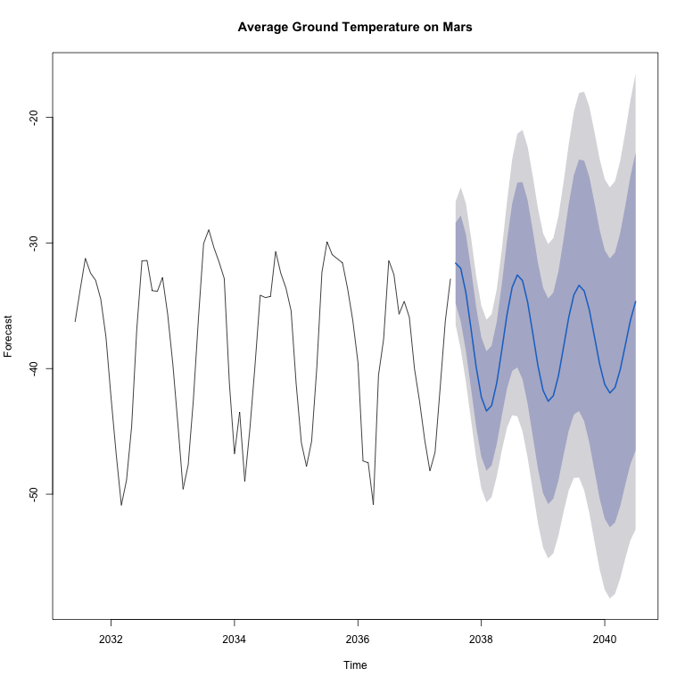
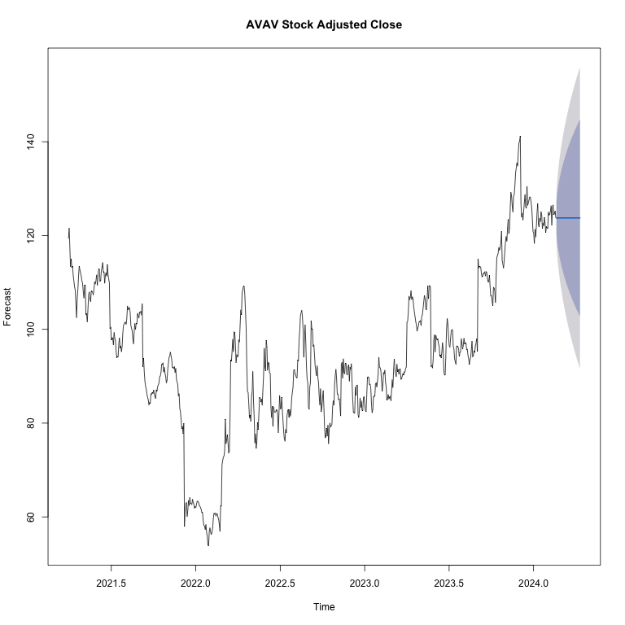
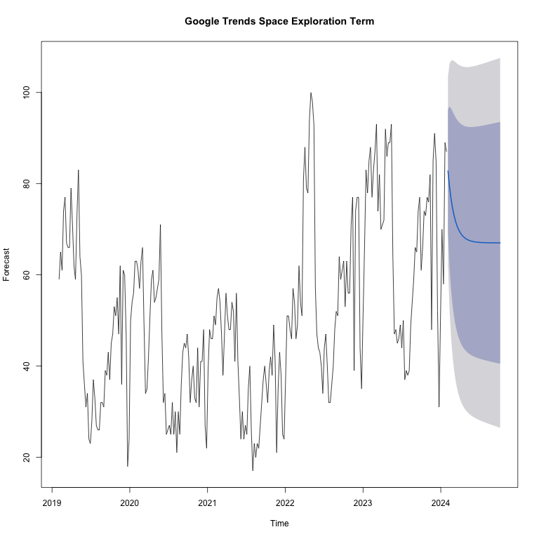
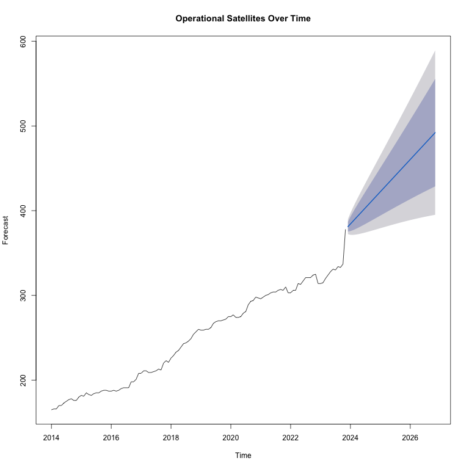
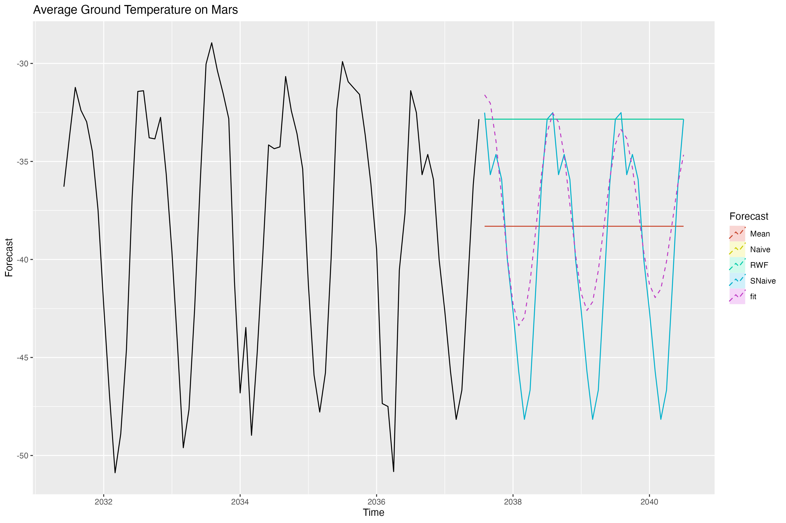
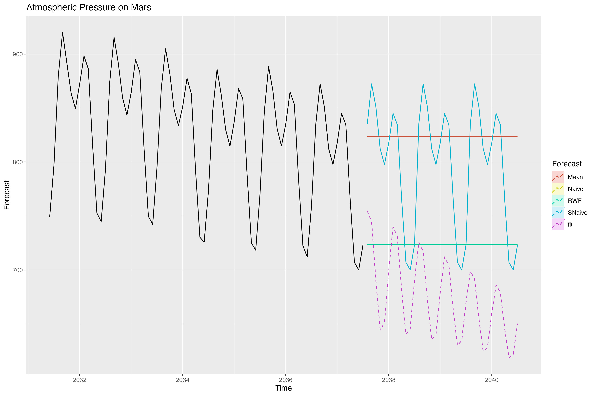
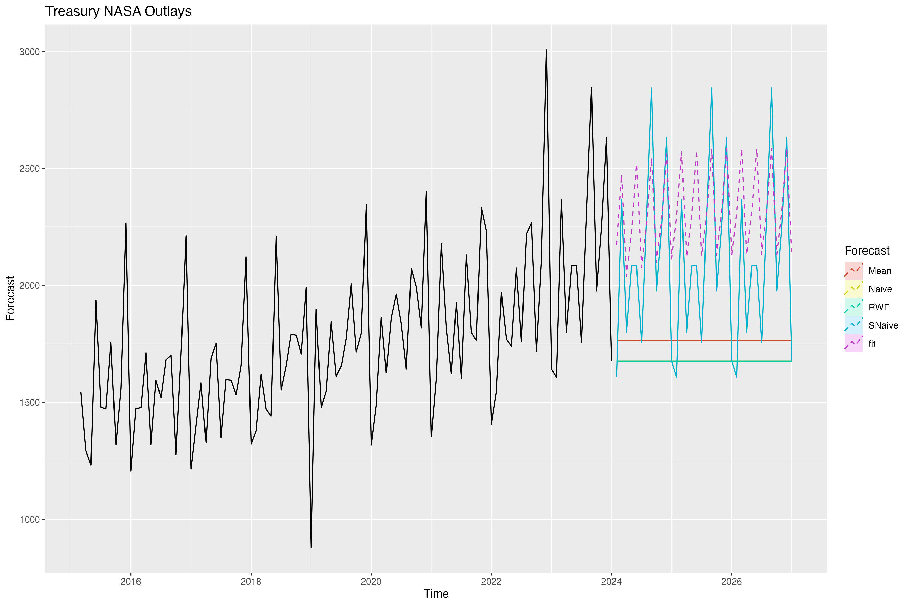
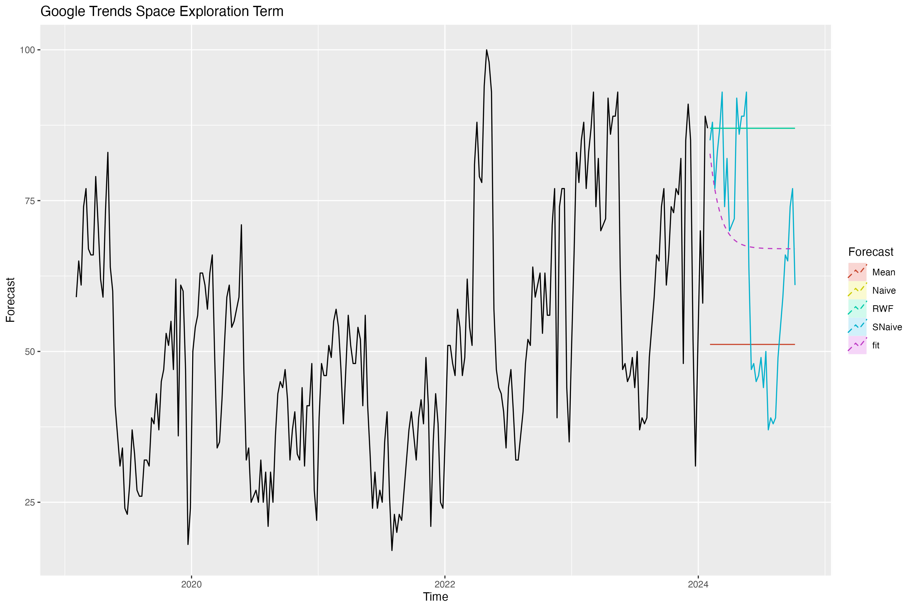
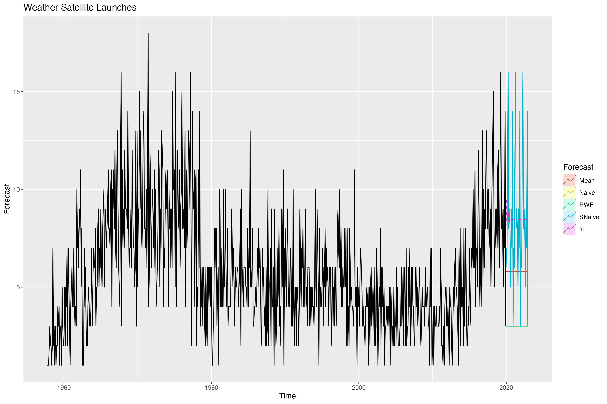

| Data Series | Stationarity Method |
|---|---|
| Average Ground Temperature on Mars | Second Difference |
| Atmospheric Pressure on Mars | Second Difference |
| ARKX Stock Adjusted Close | First Difference |
| AVAV Stock Adjusted Close | First Difference |
| Treasury NASA Outlays | First Difference |
| Google Trends Space Exploration Term | First Difference |
| Weather Satellite Launches | First Difference |
| Operational Satellites Over Time | Second Difference |
5 Univariate TS Models (ARIMA/SARIMA)
The code used in this section is available here.
5.1 ARIMA
During the previous EDA section, the following work that supports the correct section was conducted:
- We performed an initial determination on whether the data is stationary or non-stationary (see Section 4.5).
- Since the series were found to be non-stationary, we differenced them. It was also found that
log()transformations were not useful for any of the series. - We plotted the differenced data (see Section 4.6), including the ACFs and PACFs (see Section 4.7 and Section 4.8), and comments were provided throughout.
- Then, with the Augmented Dickey-Fuller Test, we showed that all the series were now stationary (see Section 4.9).
With this work, we can proceed to begin our ARIMA modeling, which is presented in this section.
5.1.1 Determining p,d, and q
On the previous EDA analysis, we determined the following to be the d values for each series:
We can also use the respective ACF and PACFs plots to determine the values of p and q:


- Mars Temperature. By the ACF Plot,
q= 0, 1, 2, 3 and, by the PACF plot:p= 0, 1, 2. - Mars Pressure. By the ACF Plot,
q= 0, 1, 2, 3, 4, 5 and, by the PACF plot,p= 0, 1, 2, 3. - ARKX. By the ACF Plot,
q= 0 and, by the PACF plot,p= 0. These findings highly suggest that this series might be best modeled as a random walk, i.e., ARIMA(0, 1, 0). - AVAV. By the ACF Plot,
q= 0 and, by the PACF plot:p= 0. These findings highly suggest that this series might be best modeled as a random walk, i.e., ARIMA(0, 1, 0). - Treasury NASA Outlays. By the ACF Plot,
q= 0, 1, 2, 3, 4 and, by the PACF plot:p= 0, 1, 2, 3. - Google Trends. By the ACF Plot,
q= 0, 1, 2 and, by the PACF plot:p= 0, 1, 2. - Launches. By the ACF Plot,
q= 0, 1 and, by the PACF plot:p= 0, 1, 2, 3, 4, 5. - Satellites. By the ACF Plot,
q= 0, 1 and, by the PACF plot,p= 0, 1.
Now, having determined potential values for p, d, and q, we can proceed to test them.
5.1.2 ARIMA Model Fitting
The following panel shows the models tested for each series:
| p | d | q | AIC | BIC | AICc |
|---|---|---|---|---|---|
| 0 | 2 | 0 | 407.985 | 410.261 | 408.042 |
| 0 | 2 | 1 | 405.902 | 410.455 | 406.076 |
| 0 | 2 | 2 | 407.895 | 414.725 | 408.248 |
| 0 | 2 | 3 | 393.789 | 402.895 | 394.386 |
| 1 | 2 | 0 | 405.636 | 410.189 | 405.81 |
| 1 | 2 | 1 | 407.341 | 414.171 | 407.694 |
| 1 | 2 | 2 | 409.312 | 418.418 | 409.909 |
| 1 | 2 | 3 | 394.866 | 406.249 | 395.775 |
| 2 | 2 | 0 | 407.493 | 414.323 | 407.846 |
| 2 | 2 | 1 | 409.329 | 418.435 | 409.926 |
| 2 | 2 | 2 | 397.701 | 409.085 | 398.61 |
| 2 | 2 | 3 | 355.293 | 368.953 | 356.585 |
| p | d | q | AIC | BIC | AICc |
|---|---|---|---|---|---|
| 0 | 2 | 0 | 736.8 | 739.077 | 736.857 |
| 0 | 2 | 1 | 695.033 | 699.586 | 695.207 |
| 0 | 2 | 2 | 679.95 | 686.78 | 680.303 |
| 0 | 2 | 3 | 652.101 | 661.208 | 652.698 |
| 0 | 2 | 4 | 650.23 | 661.613 | 651.139 |
| 0 | 2 | 5 | 634.613 | 648.273 | 635.905 |
| 1 | 2 | 0 | 721.569 | 726.123 | 721.743 |
| 1 | 2 | 1 | 692.885 | 699.715 | 693.238 |
| 1 | 2 | 2 | 680.088 | 689.194 | 680.685 |
| 1 | 2 | 3 | 652.673 | 664.057 | 653.582 |
| 1 | 2 | 4 | 651.719 | 665.379 | 653.011 |
| 1 | 2 | 5 | 634.054 | 649.99 | 635.804 |
| 2 | 2 | 0 | 630.477 | 637.307 | 630.83 |
| 2 | 2 | 1 | 621.431 | 630.537 | 622.028 |
| 2 | 2 | 2 | 617.012 | 628.395 | 617.921 |
| 2 | 2 | 3 | 600.494 | 614.154 | 601.786 |
| 2 | 2 | 4 | 585.615 | 601.552 | 587.365 |
| 3 | 2 | 0 | 621.013 | 630.119 | 621.61 |
| 3 | 2 | 1 | 622.225 | 633.609 | 623.135 |
| 3 | 2 | 2 | 620.667 | 634.327 | 621.959 |
| 3 | 2 | 3 | 613.126 | 629.063 | 614.876 |
| p | d | q | AIC | BIC | AICc |
|---|---|---|---|---|---|
| 0 | 1 | 0 | -1.49707 | 3.09185 | -1.49156 |
| p | d | q | AIC | BIC | AICc |
|---|---|---|---|---|---|
| 0 | 1 | 0 | 3527.23 | 3531.82 | 3527.24 |
| p | d | q | AIC | BIC | AICc |
|---|---|---|---|---|---|
| 0 | 1 | 0 | 1605.27 | 1607.93 | 1605.31 |
| 0 | 1 | 1 | 1527.45 | 1532.78 | 1527.57 |
| 0 | 1 | 2 | 1521.29 | 1529.28 | 1521.53 |
| 0 | 1 | 3 | 1517.84 | 1528.49 | 1518.24 |
| 0 | 1 | 4 | 1516.09 | 1529.41 | 1516.69 |
| 1 | 1 | 0 | 1579.9 | 1585.22 | 1580.01 |
| 1 | 1 | 1 | 1525.13 | 1533.12 | 1525.36 |
| 1 | 1 | 2 | 1518.49 | 1529.14 | 1518.88 |
| 1 | 1 | 3 | 1518.11 | 1531.42 | 1518.71 |
| 1 | 1 | 4 | 1518.07 | 1534.05 | 1518.92 |
| 2 | 1 | 0 | 1523.25 | 1531.24 | 1523.49 |
| 2 | 1 | 1 | 1513.82 | 1524.47 | 1514.21 |
| 2 | 1 | 2 | 1511.59 | 1524.91 | 1512.19 |
| 2 | 1 | 3 | 1490.01 | 1505.99 | 1490.86 |
| 2 | 1 | 4 | 1491.72 | 1510.36 | 1492.86 |
| 3 | 1 | 0 | 1522.52 | 1533.18 | 1522.92 |
| 3 | 1 | 1 | 1510.86 | 1524.18 | 1511.46 |
| 3 | 1 | 2 | 1512.33 | 1528.32 | 1513.18 |
| 3 | 1 | 3 | 1491.8 | 1510.44 | 1492.94 |
| 3 | 1 | 4 | 1488.14 | 1509.44 | 1489.62 |
| p | d | q | AIC | BIC | AICc |
|---|---|---|---|---|---|
| 0 | 1 | 0 | 1984.36 | 1987.92 | 1984.38 |
| 0 | 1 | 1 | 1983.15 | 1990.28 | 1983.2 |
| 0 | 1 | 2 | 1976.12 | 1986.8 | 1976.21 |
| 1 | 1 | 0 | 1984.3 | 1991.42 | 1984.35 |
| 1 | 1 | 1 | 1967.69 | 1978.37 | 1967.79 |
| 1 | 1 | 2 | 1969.59 | 1983.83 | 1969.75 |
| 2 | 1 | 0 | 1979.18 | 1989.86 | 1979.27 |
| 2 | 1 | 1 | 1969.61 | 1983.85 | 1969.77 |
| 2 | 1 | 2 | 1971.5 | 1989.3 | 1971.74 |
| p | d | q | AIC | BIC | AICc |
|---|---|---|---|---|---|
| 0 | 1 | 0 | 3970.79 | 3975.41 | 3970.8 |
| 0 | 1 | 1 | 3466.56 | 3475.79 | 3466.58 |
| 1 | 1 | 0 | 3704.41 | 3713.64 | 3704.43 |
| 1 | 1 | 1 | 3460.1 | 3473.94 | 3460.13 |
| 2 | 1 | 0 | 3625.52 | 3639.36 | 3625.55 |
| 2 | 1 | 1 | 3462.05 | 3480.51 | 3462.11 |
| 3 | 1 | 0 | 3575.02 | 3593.48 | 3575.08 |
| 3 | 1 | 1 | 3461.27 | 3484.34 | 3461.35 |
| 4 | 1 | 0 | 3547.44 | 3570.52 | 3547.53 |
| 4 | 1 | 1 | 3461.74 | 3489.43 | 3461.85 |
| 5 | 1 | 0 | 3506.58 | 3534.27 | 3506.69 |
| 5 | 1 | 1 | 3459.99 | 3492.3 | 3460.15 |
| p | d | q | AIC | BIC | AICc |
|---|---|---|---|---|---|
| 0 | 2 | 0 | 712.898 | 715.66 | 712.933 |
| 0 | 2 | 1 | 691.292 | 696.816 | 691.397 |
| 1 | 2 | 0 | 703.964 | 709.489 | 704.07 |
| 1 | 2 | 1 | 692.65 | 700.936 | 692.862 |
The following panel shows the best model for each series and their corresponding equations, which were concluded on using AIC as the criterion:
| p | d | q | AIC | BIC | AICc |
|---|---|---|---|---|---|
| 2 | 2 | 3 | 355.293 | 368.953 | 356.585 |
Equation:
\[ (1 - \phi_{1} B^{1} - \phi_{2} B^{2})(1-B)^{2} x_t = (1 - \theta_{1} B^{1}- \theta_{2} B^{2}- \theta_{3} B^{3})\omega_t \]
| p | d | q | AIC | BIC | AICc |
|---|---|---|---|---|---|
| 2 | 2 | 4 | 585.615 | 601.552 | 587.365 |
Equation:
\[ (1 - \phi_{1} B^{1} - \phi_{2} B^{2})(1-B)^{2} x_t = (1 - \theta_{1} B^{1}- \theta_{2} B^{2}- \theta_{3} B^{3}- \theta_{4} B^{4})\omega_t \]
| p | d | q | AIC | BIC | AICc |
|---|---|---|---|---|---|
| 0 | 1 | 0 | -1.49707 | 3.09185 | -1.49156 |
Equation:
\[ (1)(1-B)^{1} x_t = (1 )\omega_t \]
| p | d | q | AIC | BIC | AICc |
|---|---|---|---|---|---|
| 0 | 1 | 0 | 3527.23 | 3531.82 | 3527.24 |
Equation:
\[ (1)(1-B)^{1} x_t = (1 )\omega_t \]
| p | d | q | AIC | BIC | AICc |
|---|---|---|---|---|---|
| 3 | 1 | 4 | 1488.14 | 1509.44 | 1489.62 |
Equation:
\[ (1 - \phi_{1} B^{1} - \phi_{2} B^{2} - \phi_{3} B^{3})(1-B)^{1} x_t = (1 - \theta_{1} B^{1}- \theta_{2} B^{2}- \theta_{3} B^{3}- \theta_{4} B^{4})\omega_t \]
| p | d | q | AIC | BIC | AICc |
|---|---|---|---|---|---|
| 1 | 1 | 1 | 1967.69 | 1978.37 | 1967.79 |
Equation:
\[ (1 - \phi_{1} B^{1})(1-B)^{1} x_t = (1 - \theta_{1} B^{1})\omega_t \]
| p | d | q | AIC | BIC | AICc |
|---|---|---|---|---|---|
| 5 | 1 | 1 | 3459.99 | 3492.3 | 3460.15 |
Equation:
\[ (1 - \phi_{1} B^{1} - \phi_{2} B^{2} - \phi_{3} B^{3} - \phi_{4} B^{4} - \phi_{5} B^{5})(1-B)^{1} x_t = (1 - \theta_{1} B^{1})\omega_t \]
| p | d | q | AIC | BIC | AICc |
|---|---|---|---|---|---|
| 0 | 2 | 1 | 691.292 | 696.816 | 691.397 |
Equation:
\[ (1)(1-B)^{2} x_t = (1 - \theta_{1} B^{1})\omega_t \]
Now that the best models have been chosen, we continue with the diagnostics.
5.1.3 Model Diagnostics
$fit
Call:
arima(x = xdata, order = c(p, d, q), seasonal = list(order = c(P, D, Q), period = S),
include.mean = !no.constant, transform.pars = trans, fixed = fixed, optim.control = list(trace = trc,
REPORT = 1, reltol = tol))
Coefficients:
ar1 ar2 ma1 ma2 ma3
0.7964 -0.6722 -1.4499 1.3751 -0.9253
s.e. 0.1566 0.1320 0.1209 0.1227 0.0876
sigma^2 estimated as 9.718: log likelihood = -187.09, aic = 386.19
$degrees_of_freedom
[1] 67
$ttable
Estimate SE t.value p.value
ar1 0.7964 0.1566 5.0858 0
ar2 -0.6722 0.1320 -5.0909 0
ma1 -1.4499 0.1209 -11.9929 0
ma2 1.3751 0.1227 11.2051 0
ma3 -0.9253 0.0876 -10.5621 0
$ICs
AIC AICc BIC
5.363705 5.376331 5.553427
$fit
Call:
arima(x = xdata, order = c(p, d, q), seasonal = list(order = c(P, D, Q), period = S),
include.mean = !no.constant, transform.pars = trans, fixed = fixed, optim.control = list(trace = trc,
REPORT = 1, reltol = tol))
Coefficients:
ar1 ar2 ma1 ma2 ma3 ma4
0.9824 -0.9658 -0.8368 0.5997 -0.1876 -0.5753
s.e. 0.0315 0.0251 0.1111 0.1469 0.1459 0.1039
sigma^2 estimated as 135.3: log likelihood = -285.81, aic = 585.62
$degrees_of_freedom
[1] 66
$ttable
Estimate SE t.value p.value
ar1 0.9824 0.0315 31.2322 0.0000
ar2 -0.9658 0.0251 -38.4349 0.0000
ma1 -0.8368 0.1111 -7.5331 0.0000
ma2 0.5997 0.1469 4.0825 0.0001
ma3 -0.1876 0.1459 -1.2857 0.2031
ma4 -0.5753 0.1039 -5.5364 0.0000
$ICs
AIC AICc BIC
8.133546 8.151495 8.354889
$fit
Call:
arima(x = xdata, order = c(p, d, q), seasonal = list(order = c(P, D, Q), period = S),
xreg = constant, transform.pars = trans, fixed = fixed, optim.control = list(trace = trc,
REPORT = 1, reltol = tol))
Coefficients:
constant
-0.0088
s.e. 0.0089
sigma^2 estimated as 0.05819: log likelihood = 2.24, aic = -0.47
$degrees_of_freedom
[1] 726
$ttable
Estimate SE t.value p.value
constant -0.0088 0.0089 -0.987 0.3239
$ICs
AIC AICc BIC
-0.0006474495 -0.0006398604 0.0119768324
$fit
Call:
arima(x = xdata, order = c(p, d, q), seasonal = list(order = c(P, D, Q), period = S),
xreg = constant, transform.pars = trans, fixed = fixed, optim.control = list(trace = trc,
REPORT = 1, reltol = tol))
Coefficients:
constant
0.0061
s.e. 0.1014
sigma^2 estimated as 7.472: log likelihood = -1762.61, aic = 3529.23
$degrees_of_freedom
[1] 726
$ttable
Estimate SE t.value p.value
constant 0.0061 0.1014 0.0597 0.9524
$ICs
AIC AICc BIC
4.854511 4.854518 4.867135
$fit
Call:
arima(x = xdata, order = c(p, d, q), seasonal = list(order = c(P, D, Q), period = S),
xreg = constant, transform.pars = trans, fixed = fixed, optim.control = list(trace = trc,
REPORT = 1, reltol = tol))
Coefficients:
ar1 ar2 ar3 ma1 ma2 ma3 ma4 constant
-0.0681 -0.0653 0.9329 -0.9751 -0.0312 -0.9728 0.9988 6.2142
s.e. 0.0494 0.0502 0.0494 0.0784 0.0642 0.1076 0.0928 2.0164
sigma^2 estimated as 53163: log likelihood = -733.65, aic = 1485.3
$degrees_of_freedom
[1] 98
$ttable
Estimate SE t.value p.value
ar1 -0.0681 0.0494 -1.3775 0.1715
ar2 -0.0653 0.0502 -1.3005 0.1965
ar3 0.9329 0.0494 18.8730 0.0000
ma1 -0.9751 0.0784 -12.4342 0.0000
ma2 -0.0312 0.0642 -0.4868 0.6275
ma3 -0.9728 0.1076 -9.0434 0.0000
ma4 0.9988 0.0928 10.7641 0.0000
constant 6.2142 2.0164 3.0819 0.0027
$ICs
AIC AICc BIC
14.01224 14.02625 14.23838
$fit
Call:
arima(x = xdata, order = c(p, d, q), seasonal = list(order = c(P, D, Q), period = S),
xreg = constant, transform.pars = trans, fixed = fixed, optim.control = list(trace = trc,
REPORT = 1, reltol = tol))
Coefficients:
ar1 ma1 constant
0.7998 -0.9806 0.0824
s.e. 0.0545 0.0290 0.0813
sigma^2 estimated as 109.9: log likelihood = -980.51, aic = 1969.02
$degrees_of_freedom
[1] 257
$ttable
Estimate SE t.value p.value
ar1 0.7998 0.0545 14.6793 0.0000
ma1 -0.9806 0.0290 -33.8337 0.0000
constant 0.0824 0.0813 1.0129 0.3121
$ICs
AIC AICc BIC
7.573157 7.573518 7.627937
$fit
Call:
arima(x = xdata, order = c(p, d, q), seasonal = list(order = c(P, D, Q), period = S),
xreg = constant, transform.pars = trans, fixed = fixed, optim.control = list(trace = trc,
REPORT = 1, reltol = tol))
Coefficients:
ar1 ar2 ar3 ar4 ar5 ma1 constant
-0.2001 -0.0936 -0.1245 -0.0915 -0.0843 -0.8035 0.0089
s.e. 0.0562 0.0554 0.0505 0.0483 0.0440 0.0448 0.0111
sigma^2 estimated as 5.919: log likelihood = -1722.68, aic = 3461.35
$degrees_of_freedom
[1] 739
$ttable
Estimate SE t.value p.value
ar1 -0.2001 0.0562 -3.5591 0.0004
ar2 -0.0936 0.0554 -1.6913 0.0912
ar3 -0.1245 0.0505 -2.4646 0.0139
ar4 -0.0915 0.0483 -1.8953 0.0584
ar5 -0.0843 0.0440 -1.9159 0.0558
ma1 -0.8035 0.0448 -17.9516 0.0000
constant 0.0089 0.0111 0.8069 0.4200
$ICs
AIC AICc BIC
4.639881 4.640085 4.689369
$fit
Call:
arima(x = xdata, order = c(p, d, q), seasonal = list(order = c(P, D, Q), period = S),
include.mean = !no.constant, transform.pars = trans, fixed = fixed, optim.control = list(trace = trc,
REPORT = 1, reltol = tol))
Coefficients:
ma1
-0.9045
s.e. 0.1960
sigma^2 estimated as 20.53: log likelihood = -343.64, aic = 691.28
$degrees_of_freedom
[1] 116
$ttable
Estimate SE t.value p.value
ma1 -0.9045 0.196 -4.6152 0
$ICs
AIC AICc BIC
5.908391 5.908689 5.955608
Mars Temperature.
- Standardized residuals: The plot shows fluctuations over time but no apparent patterns.
- ACF of residuals: The autocorrelation function bars are mostly within the confidence bounds but still require further improvement.
- Q-Q Plot: Points largely follow the line, indicating residuals are close to normal distribution.
- Ljung-Box: The p-values are below the significance threshold, implying autocorrelation at various lags. We will address this during the SARIMA portion.
- Model output: The model has all significant AR and MA, as low p-values indicate.
Mars Pressure.
- Standardized residuals: The plot shows fluctuations over time and some patterns are apparent. We will address this during the SARIMA portion with seasonal parameters.
- ACF of residuals: The autocorrelation function bars are mostly within the confidence bounds but still require further improvement.
- Q-Q Plot: Points largely follow the line, indicating residuals are close to normal distribution.
- Ljung-Box: The p-values are below the significance threshold, implying autocorrelation at various lags. We will address this during the SARIMA portion with seasonal parameters.
- Model output: The model has significant AR and MA, as low p-values indicate, however one of the MA terms is insignificant.
ARKX.
- Standardized residuals: The plot shows fluctuations over time, and no patterns are apparent.
- ACF of residuals: The autocorrelation function bars are within the confidence bounds.
- Q-Q Plot: Points largely follow the line, indicating residuals are close to normal distribution.
- Ljung-Box: The p-values are above the significance threshold, implying no autocorrelation at various lags.
- Model output: The model has only a constant that would be removed if deemed a random walk.
This is further evidence that a random walk model may be the best for this data.
AVAV.
- Standardized residuals: The plot shows fluctuations over time, with no apparent patterns.
- ACF of residuals: The autocorrelation function bars are within the confidence bounds.
- Q-Q Plot: Points largely follow the line, indicating residuals are close to normal distribution.
- Ljung-Box: The p-values are above the significance threshold, implying no autocorrelation at various lags.
- Model output: The model has only a constant that would be removed if deemed a random walk.
This is further evidence that a random walk model may be the best for this data.
Treasury NASA Outlays.
- Standardized residuals: The plot shows fluctuations over time and some patterns are apparent. We will address this during the SARIMA portion with seasonal parameters.
- ACF of residuals: The autocorrelation function bars are mostly within the confidence bounds but still require further improvement.
- Q-Q Plot: Points largely follow the line, indicating residuals are close to normal distribution.
- Ljung-Box: The p-values are below the significance threshold, implying autocorrelation at various lags. We will address this during the SARIMA portion with seasonal parameters.
- Model output: The model has significant AR and MA, as low p-values indicate, but some terms are insignificant.
Google Trends.
- Standardized residuals: The plot shows fluctuations over time but patterns are not apparent.
- ACF of residuals: The autocorrelation function bars are mostly within the confidence bounds.
- Q-Q Plot: Points largely follow the line, indicating residuals are close to normal distribution.
- Ljung-Box: A few of the p-values are below the significance threshold, implying autocorrelation. We will address this during the SARIMA portion.
- Model output: The model has significant AR and MA, as low p-values indicate.
Launches.
- Standardized residuals: The plot shows fluctuations over time, with no apparent patterns.
- ACF of residuals: The autocorrelation function bars are mostly within the confidence bounds, but we will improve this during the SARIMA portion.
- Q-Q Plot: Points largely follow the line, indicating residuals are close to normal distribution.
- Ljung-Box: The p-values are above the significance threshold, implying no autocorrelation at various lags.
- Model output: The model has significant AR and MA, as low p-values indicate, but some terms are insignificant.
Satellites.
- Standardized residuals: The plot shows fluctuations over time, and no patterns are apparent.
- ACF of residuals: The autocorrelation function bars are within the confidence bounds.
- Q-Q Plot: Points largely follow the line, indicating residuals are close to normal distribution.
- Ljung-Box: The p-values are above the significance threshold, implying no autocorrelation at various lags.
- Model output: The model has significant MA, as low p-values indicate.
5.1.4 auto.arima()
The following shows a comparison between the output of the auto.arima function and the previously selected model for each series:
auto.arima result:
Series: time_series
ARIMA(1,0,0)(2,1,0)[12]
Coefficients:
ar1 sar1 sar2
0.4416 -0.5915 -0.5616
s.e. 0.1188 0.1124 0.1087
sigma^2 = 3.721: log likelihood = -132.75
AIC=273.5 AICc=274.2 BIC=282.01
Previously chosen model:
p d q AIC BIC AICc
2 2 3 355.292727 368.952724 356.585035auto.arima result:
Series: time_series
ARIMA(0,1,0)(0,1,0)[12]
sigma^2 = 17.7: log likelihood = -173.93
AIC=349.86 AICc=349.93 BIC=351.97
Previously chosen model:
p d q AIC BIC AICc
2 2 4 585.615319 601.551981 587.365319auto.arima result:
Series: time_series
ARIMA(0,1,0)
sigma^2 = 0.05827: log likelihood = 1.75
AIC=-1.5 AICc=-1.49 BIC=3.09
Previously chosen model:
p d q AIC BIC AICc
0 1 0 -1.497075 3.091852 -1.491558auto.arima result:
Series: time_series
ARIMA(0,1,0)
sigma^2 = 7.472: log likelihood = -1762.62
AIC=3527.23 AICc=3527.24 BIC=3531.82
Previously chosen model:
p d q AIC BIC AICc
0 1 0 3527.232841 3531.821767 3527.238358auto.arima result:
Series: time_series
ARIMA(0,0,1)(0,1,1)[12] with drift
Coefficients:
ma1 sma1 drift
-0.1874 -0.7498 6.0627
s.e. 0.1065 0.1496 0.5506
sigma^2 = 37817: log likelihood = -638.89
AIC=1285.78 AICc=1286.22 BIC=1295.99
Previously chosen model:
p d q AIC BIC AICc
3 1 4 1488.136156 1509.443668 1489.620692auto.arima result:
Series: time_series
ARIMA(0,1,2)(1,1,0)[52]
Coefficients:
ma1 ma2 sar1
-0.3528 -0.2198 -0.4485
s.e. 0.0680 0.0736 0.0709
sigma^2 = 83.68: log likelihood = -759.94
AIC=1527.89 AICc=1528.08 BIC=1541.24
Previously chosen model:
p d q AIC BIC AICc
1 1 1 1967.692074 1978.374119 1967.785824auto.arima result:
Series: time_series
ARIMA(0,1,2)(0,0,2)[12]
Coefficients:
ma1 ma2 sma1 sma2
-0.9948 0.0990 0.1061 0.1219
s.e. 0.0370 0.0371 0.0375 0.0354
sigma^2 = 5.852: log likelihood = -1716.6
AIC=3443.19 AICc=3443.27 BIC=3466.26
Previously chosen model:
p d q AIC BIC AICc
5 1 1 3459.993951 3492.29703 3460.145712auto.arima result:
Series: time_series
ARIMA(0,1,0) with drift
Coefficients:
drift
1.8051
s.e. 0.4105
sigma^2 = 20.06: log likelihood = -343.84
AIC=691.69 AICc=691.79 BIC=697.23
Previously chosen model:
p d q AIC BIC AICc
0 2 1 691.291635 696.815983 691.396898- Mars Temperature: The results of
auto.arima()support the need for seasonal terms, as previously discussed. Hence, theauto.arima()model is likely better. - Mars Pressure: The results of
auto.arima()support the need for seasonal terms, as previously discussed. Hence, theauto.arima()model is likely better. - ARKX: The
auto.arima()result suggests that the series is, as previously suggested, best modeled as a random walk. Hence, the chosen model is likely best. - AVAV: The
auto.arima()result suggests that the series is, as previously suggested, best modeled as a random walk. Hence, the chosen model is likely best. - Treasury NASA Outlays: The results also support the need for seasonal terms, as previously discussed. The
auto.arima()performance metrics are lower. Hence, theauto.arima()model is likely better. - Google Trends: The results also support the need for seasonal terms, as previously discussed. The
auto.arima()performance metrics are lower. Hence, theauto.arima()model is likely better. - Launches: The results also support the need for seasonal terms, as previously discussed. The
auto.arima()performance metrics are lower. Hence, theauto.arima()model is likely better. - Satellites: The
auto.arima()suggest a random walk model with drift, which by the principle of parsimony, may be a better fit. This will be further discussed in the SARIMA section.
5.1.5 Forecast




- Mars Temperature: The forecast follows the overall pattern of the data. However, it does not get the seasonality right.
- Mars Pressure: The forecast gets the overall seasonality patterns wrong, but only the broader pattern is correct. It also captured the downward trend of the data.
- ARKX: Since this model is a random walk, the forecast with the bands shows previous values and wide confidence bands.
- AVAV: Since this model is also a random walk, the forecast with the bands shows previous values and wide confidence bands.
- Treasury NASA Outlays: The forecast could only capture some of the seasonality; however, the model still needs improvement to capture the overall pattern.
- Google Trends: As previously established, this model requires additional terms, and, as such, the forecast takes a direction but without resembling the overall patterns in the data.
- Launches: As previously established, this model requires additional terms, and as such, the forecast only reflects the highly volatile data.
- Satellites: This forecast is highly reflective of the data, given that it is mostly a drifting pattern.
5.1.6 Benchmark Methods
Visualization:

Metrics:
| Method | RMSE | MSE | MAE |
|---|---|---|---|
| Mean | 6.32513 | 5.60803 | 5.60803 |
| Naive | 3.99073 | 3.28983 | 3.28983 |
| SNaive | 2.74773 | 2.17864 | 2.17864 |
| RWF | 3.99073 | 3.28983 | 3.28983 |
| ARIMA | 2.33199 | 1.87184 | 1.87184 |
Visualization:

Metrics:
| Method | RMSE | MSE | MAE |
|---|---|---|---|
| Mean | 58.0269 | 49.2388 | 49.2388 |
| Naive | 42.6673 | 36.3194 | 36.3194 |
| SNaive | 12.644 | 10.2099 | 10.2099 |
| RWF | 42.6673 | 36.3194 | 36.3194 |
| ARIMA | 11.4729 | 9.14004 | 9.14004 |
Visualization:
Metrics:
| Method | RMSE | MSE | MAE |
|---|---|---|---|
| Mean | 2.83046 | 2.48152 | 2.48152 |
| Naive | 0.241389 | 0.188894 | 0.188894 |
| SNaive | 4.31569 | 3.4923 | 3.4923 |
| RWF | 0.241389 | 0.188894 | 0.188894 |
| ARIMA | 0.241225 | 0.188663 | 0.188663 |
Visualization:
Metrics:
| Method | RMSE | MSE | MAE |
|---|---|---|---|
| Mean | 16.8631 | 13.0502 | 13.0502 |
| Naive | 2.73346 | 1.77323 | 1.77323 |
| SNaive | 22.9545 | 19.3187 | 19.3187 |
| RWF | 2.73346 | 1.77323 | 1.77323 |
| ARIMA | 2.73159 | 1.77096 | 1.77096 |
Visualization:

Metrics:
| Method | RMSE | MSE | MAE |
|---|---|---|---|
| Mean | 353.807 | 271.601 | 271.601 |
| Naive | 465.746 | 358.741 | 358.741 |
| SNaive | 253.909 | 195.551 | 195.551 |
| RWF | 465.746 | 358.741 | 358.741 |
| ARIMA | 238.663 | 188.885 | 188.885 |
Visualization:

Metrics:
| Method | RMSE | MSE | MAE |
|---|---|---|---|
| Mean | 18.9977 | 15.4921 | 15.4921 |
| Naive | 10.9495 | 7.90769 | 7.90769 |
| SNaive | 18.4074 | 14.2356 | 14.2356 |
| RWF | 10.9495 | 7.90769 | 7.90769 |
| ARIMA | 10.4846 | 7.81022 | 7.81022 |
Visualization:

Metrics:
| Method | RMSE | MSE | MAE |
|---|---|---|---|
| Mean | 3.06655 | 2.43 | 2.43 |
| Naive | 3.45945 | 2.65684 | 2.65684 |
| SNaive | 3.16894 | 2.42313 | 2.42313 |
| RWF | 3.45945 | 2.65684 | 2.65684 |
| ARIMA | 2.43236 | 1.87856 | 1.87856 |
Visualization:
Metrics:
| Method | RMSE | MSE | MAE |
|---|---|---|---|
| Mean | 55.0698 | 49.4044 | 49.4044 |
| Naive | 4.81083 | 2.5 | 2.5 |
| SNaive | 19.6326 | 17.6262 | 17.6262 |
| RWF | 4.81083 | 2.5 | 2.5 |
| ARIMA | 4.47817 | 2.20521 | 2.20521 |
The RMSE of the fitted models outperforms the benchmark methods Mean, Naive, SNaive, and RWF in all cases. The are some that were very close to the performance of the benchmark methods such as ARKX (with RMSEs vs the Naive method of 0.241225 vs 0.241389) and AVAV (with RMSEs vs the Naive method of 2.73159 vs 2.73346) as these are random walks. Other series that were close were Mars Pressure, Google Trends, and Satellites whose improvements we will address in the next section.
5.2 SARIMA
SARIMA models have been moved to Homework 4.